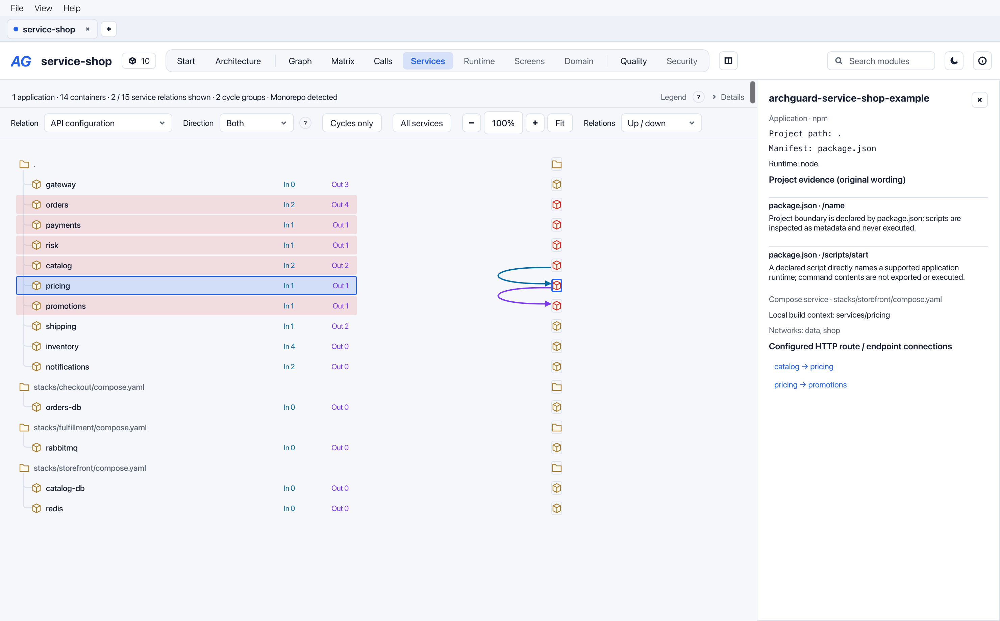

Mit einem prüfbaren Beispiel beginnen
Nutzt das enthaltene Service-Shop-Demo oder versionierte Open-Source-Anleitungen wie Commons Collections, eShop, Kafka und die OpenTelemetry Demo. Haltet Revision und Analyseumfang bei jedem Ergebnis fest.
Ein Kästchen-Pfeil-Diagramm wird nützlicher, wenn Studierende den Code hinter einem Pfeil untersuchen können. Prüft Architekturbehauptungen gemeinsam an reproduzierbaren Beispielen.
Fehlende Evidenz ist nicht null. Sieh, was gemessen wurde, was abgeleitet ist und was unbekannt bleibt.
Nutzt das enthaltene Service-Shop-Demo oder versionierte Open-Source-Anleitungen wie Commons Collections, eShop, Kafka und die OpenTelemetry Demo. Haltet Revision und Analyseumfang bei jedem Ergebnis fest.
Vergleicht World View, Paketgraph und Abhängigkeitsmatrix. Verfolgt eine ausgewählte Verbindung zur Quelle und diskutiert, warum Aggregation andere Zyklusgruppen sichtbar machen kann.
Beschreibt das Entfernen einer Kante, Verschieben oder Zusammenführen und untersucht den virtuellen Graphen. Diskutiert danach die Codeänderungen, Tests und fachlichen Abwägungen, die der Graph nicht entscheiden kann.
Service Shop ist ein absichtlich gekoppeltes Demo. Catalog fragt Preise ab, Pricing holt Rabatte bei Promotions und Promotions liest Kategorien von Catalog. Der Rückruf nutzt einen anderen Endpunkt: Ein struktureller Zyklus beweist keine Endlosrekursion.

Echter Desktop-Capture · Service Shop · Konfigurierte HTTP-Beziehungen
Zur Service-Shop-Übung (EN)Führt den Befehl nach der Installation von ArchGuard im Stammverzeichnis des ArchGuard-Repositories aus. Das enthaltene Demo benötigt keine laufenden Container. Erwartet Exit-Code 1, weil konfigurierte HTTP-Zyklen vorhanden sind: Das ist der Befund der Übung, kein Installationsfehler.
Sprachvoraussetzungen prüfen (EN)archguard services examples/service-shop --fail-on-foundService Shop ist ein Lehrdemo mit Daten im Speicher und simulierten Zahlungen, kein Produktionssystem. Versionierte Drittprojekte behalten ihre eigenen Lizenzen. Fehlende Compiler-Werkzeuge oder Laufzeit-Traces begrenzen die Aussagen; eine graue oder unbekannte Messung ist niemals null.